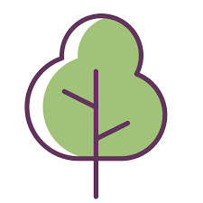
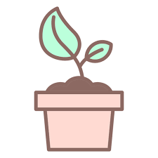

A vida silvestre e o crime florestal tornaram-se um crime organizado transantencial de baixo risco e alto lucro, que está sobrecarregando países e comunidades,
afetando a biodiversidade e o desenvolvimento. Através do Programa Global de Combate à Vida Selvagem e ao Crime Florestal, o UNODC buscará seu apoio na frente com
a aplicação da lei, processos judiciais, judiciários e partes interessadas relevantes em nível nacional e internacional para abordar essa questão. O UNODC está liderando
o trabalho no fortalecimento de estruturas legislativas nacionais, aplicação da lei, capacidade judiciária e judicial, fomentando a cooperação internacional,
desenvolvendo soluções inovadoras em análise forense e conduzindo pesquisas através de sua pesquisa global sobre o crime contra a vida selvagem. Através deste trabalho de pesquisa global,
o UNODC apóia o monitoramento do ODS 15, em particular a meta 15.7. Nos próximos anos, o UNODC pretende fornecer apoio aos países para alcançar o ODS 15 na redução da vida selvagem organizada
e do crime florestal por meio de intervenções concretas e baseadas em evidências mensuráveis. O UN ODC faz parte do Consórcio Internacional de Combate ao Crime contra a Vida Selvagem (ICCWC),
formado por cinco entidades globais que trabalham juntas para fornecer apio de múltiplas agências a países afetados pelo comércio ilegal de animais e plantas.
Objetivo 15. Proteger, Recuperar E Promover O Uso Sustentável Dos Ecossistemas Terrestres,
Gerir De Forma Sustentável As Florestas, Combater A Desertificação,
.
.
.
15.1 Até 2020, assegurar a conservação, recuperação e uso sustentável de ecossistemas
terrestres e de água doce interiores e seus serviços, em especial florestas, zonas úmidas, montanhas e
terras áridas, em conformidade com as obrigações decorrentes dos acordos internacionais
15.2 Até 2020, promover a implementação da gestão sustentável de todos os tipos de florestas,
deter o desmatamento, restaurar florestas degradadas e aumentar substancialmente o florestamento
e o reflorestamento globalmente
.
.
.
15.3 Até 2030, combater a desertificação, restaurar a terra e o solo degradado, incluindo terrenos afetados pela desertificação,
secas e inundações, e lutar para alcançar um mundo neutro em termos de degradação do solo
.
.
.

15.4 Até 2030, assegurar a conservação dos ecossistemas de montanha, incluindo a sua biodiversidade, para melhorar a sua
capacidade de proporcionar benefícios que são essenciais para o desenvolvimento sustentável
.
.
.

Meu nome é Victoria Alves,tenho 14 anos tenho um irmão gemêo, e eu gosto
de desenhar ouvindo musica,mais não estou desenhando mais esses dias
.